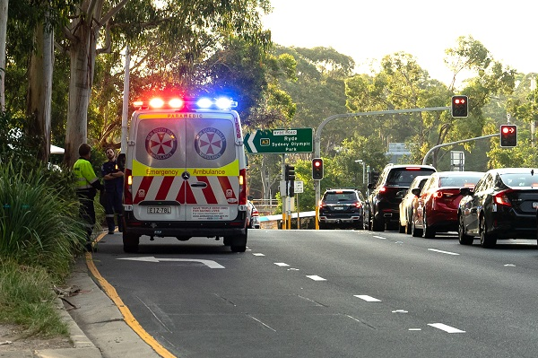

Faster Response During Emergencies
In an increasingly complex and interconnected world, the need for faster emergency response has never been greater. By prioritizing speed, efficiency, and coordination, emergency management agencies can enhance their capacity to protect lives, property, and communities in times of crisis. Through the adoption of innovative technologies, improved communication systems, and community engagement initiatives, we can build more resilient and responsive emergency response systems capable of mitigating the impact of disasters and saving lives.
Some Features That Made Us Unique
Few Tap Help
Map Integration
Crowd Source Report
Print Incident Report
CodeRied+ is available in these Platforms
Desktop
For Admin
On Mobile
For Community